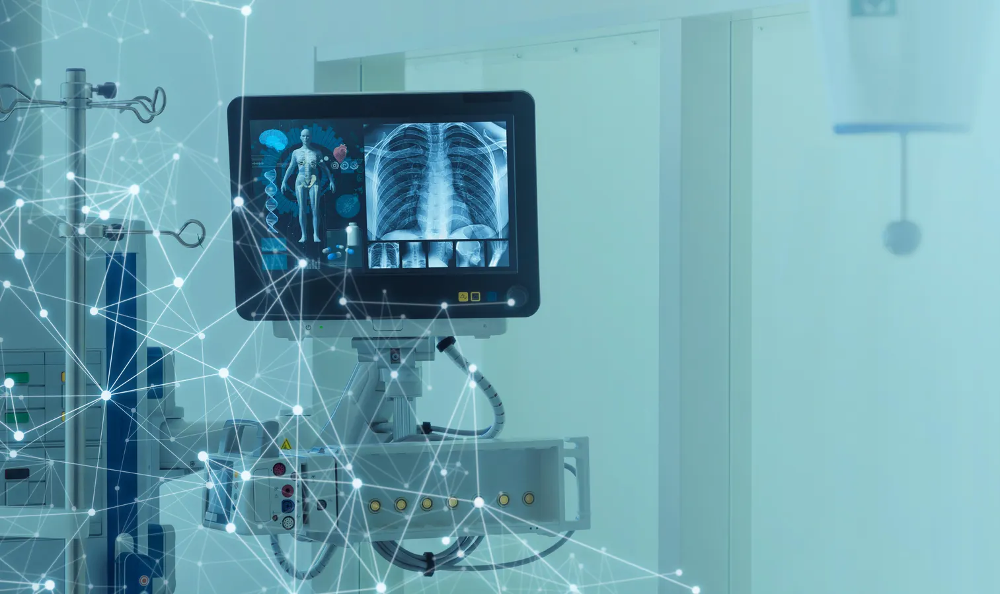

URL |
How Artificial Intelligence is Revolutionizing Disease Detection and Prevention |
| Site Author |
Valparaidso Universiy |
Abstract |
This site contains information about ways that artificial intelligence is shaping the world of medical diagnosis and prevention. AI can analyze large amounts of medical information in a very short time. It is also powerful in predictive modeling, which can help identify disease or the potential for an outbreak. AI was very helpful during the COVID-19 pandemic in predicting hospital capacity and medical resource supply. In addition, AI is being used to analyze medical images, especially in the field of radiology, to identify anomalies before they are even detectable by the naked human eye. It is also being used to detect disease in genomic analysis and predict patient susceptibility of disease so that preventive measures can be put in place promptly. While AI is very helpful, there are ethical considerations and challenges in place that need to be considered, which this website covers. At this point in time, AI technology is continuously evolving and will be further used in the healthcare field. |

| URL |
New AI Tool Predicts Risk of More than 300 Diseases With Exisiting Patient Data |
| Site
Author |
Beth Dougherty: Dana-Farber Communications |
| Abstract |
This
site explains how researchers at Harvard Medical School, Dana-Farber Cancer Institute, and Massachusetts General Hospital have developed an artificial intelligence tool, Aladynoulli, that can determine a patient's likelihood of 348 different diseases. Researchers identified 20 biological patterns, also known as signatures, that can show an increased risk for developing certain diseases in the future. The tool then uses these patterns, their medical history, and genetic information to predict personal health risks for that patient. So far, this model has already outperformed three existing models when it comes to determining the risk of cardiovascular diseases and cancer. Doctors and researchers hope that this tool will help detect diseases before they become debilitating so that better preventative measures can be put into place. So far, the tool has only been tested using previous patient records, but researchers would like to evaluate its performance in clinical settings as well. At this point, the next steps the team has for this tool is to use it to better understand why and how melanoma spreads to other organs. |